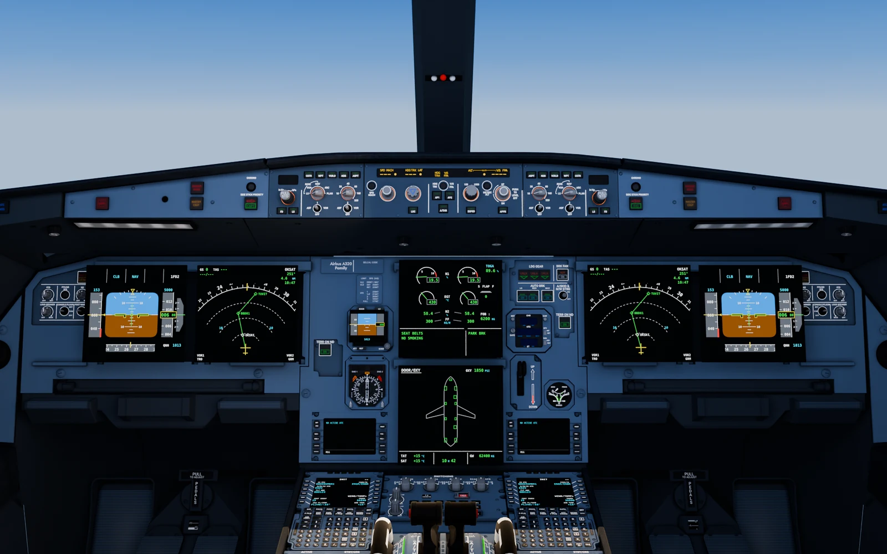
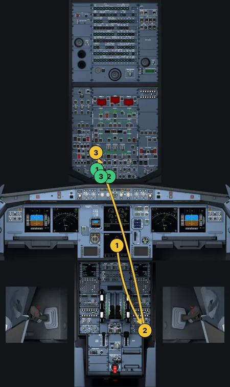
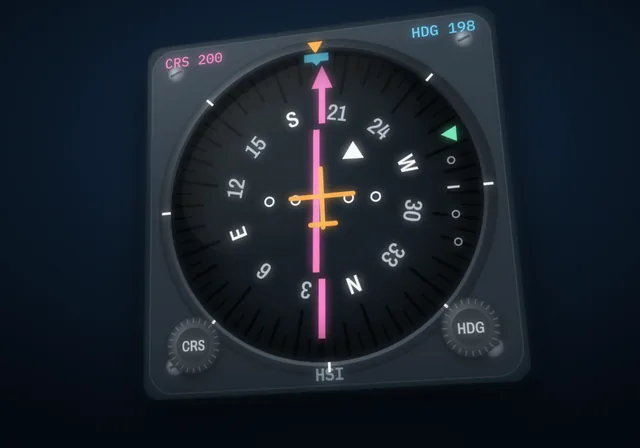
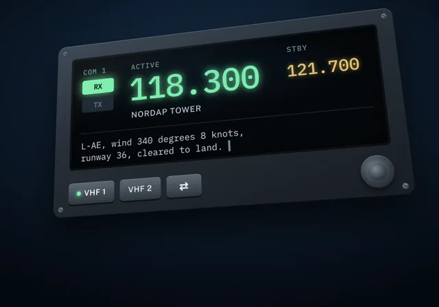
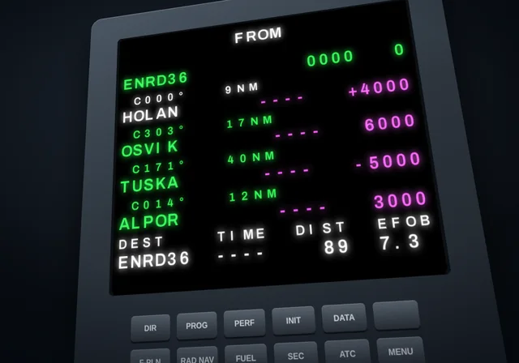
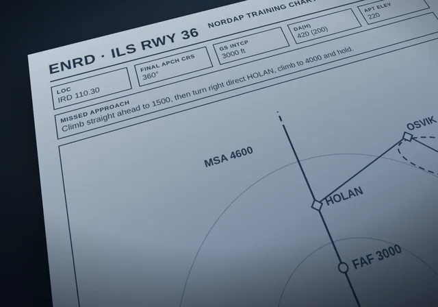

DA42
Multi-engine piston, glass cockpit
- Trains
- Normal and abnormal flows, autopilot management, ILS, RNAV and VOR approaches, engine failure and asymmetric flight.
Cockpits, flows, IFR, radio and briefing in one place. Everything runs in the browser.


A320 · Before takeoff



Working cockpits for three aircraft, from the DA42 to the King Air and the A320, and a trainer for the A320 MCDU. Each cockpit runs as a 2D panel; the 3D cockpits are in beta.
Multi-engine piston, glass cockpit
Twin turboprop, two-pilot flight deck
Twin jet, fly-by-wire, two-pilot flight deck
FMGS from cockpit preparation to the approach, with an ND in plan mode
Instrument procedures, from tracking a radial to flying the ILS, taught the way an instructor would.
Learn instrument flying one procedure at a time. An instructor on screen tells you the next step and why, and the replay marks your first mistake.
46exercises in eleven groups: tracking, intercepts, NDB, DME arcs, holding, procedure turns, VOR, NDB, LOC, ILS and RNP approaches, SID and STAR, mental maths and partial panel.
Brief a departure or an approach out loud, the way you will in the aircraft, and get it scored.
Every scenario gives you today’s weather, a training chart and the aircraft numbers. You brief in a fixed order, by voice or keyboard, and the instructor tells you what you covered, what you missed and whether the numbers are right.
3briefings: the departure (T-RIBETS), the instrument approach (TSADMM) and the VFR arrival, each with a model briefing to compare with.
Two-way radio practice with EASA and ICAO phraseology, from single calls to a whole flight.
Make the call, the controller answers, and every transmission is checked: what you read back, what you missed and what a good call sounds like. Hold the push-to-talk button and speak, or type.
Study a type in depth, then prepare for the assessment in front of you.
An independent platform, open to structured review and collaboration.
Teaching models, not certified simulators. No EASA, Luftfartstilsynet or ATO endorsement is implied.Data sources and licences